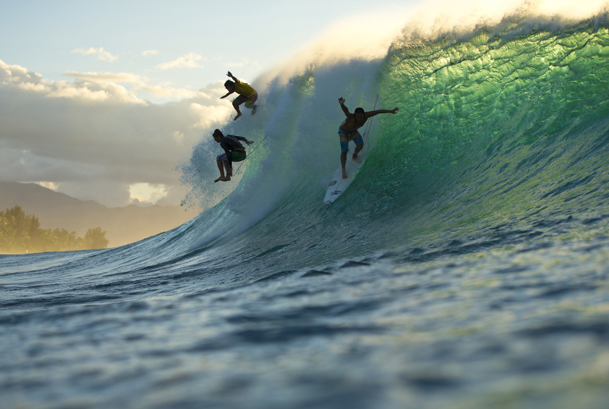
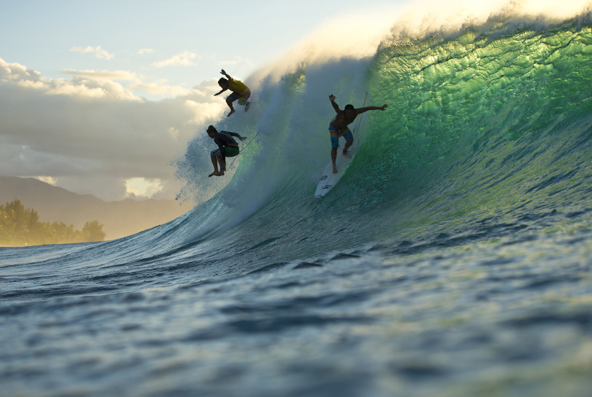

Hikkaduwa turtle hatchery, located 2 kilometers north, showcases turtle eggs and hatching, and allows visitors to release newborns into the ocean. The ideal months to visit the turtle hatchery are often March and April, but other periods are also acceptable.

 
